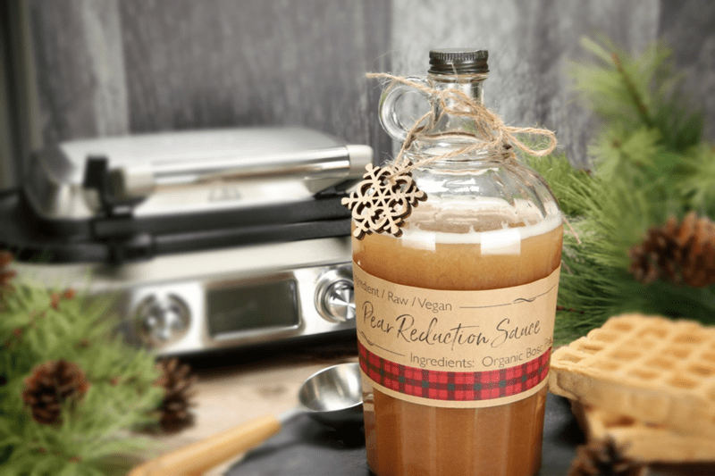
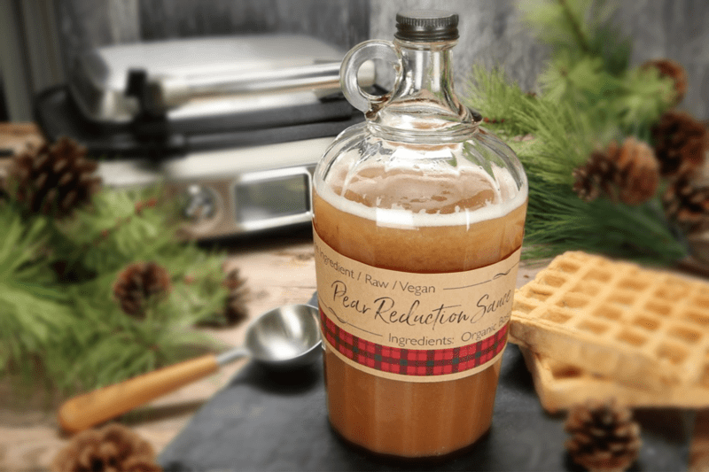
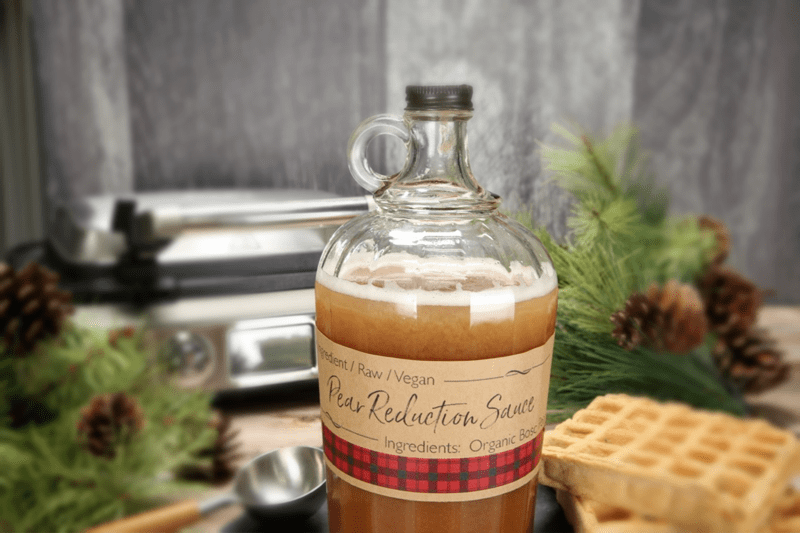

Pear Reduction Syrup
Transform your ripe pears into a delightful sauce through the fall and winter months. If you are wondering what to do with this amazing sauce, let me share a few ideas; serve as a dipping syrup for Banana Bread Toast Sticks, dress up your favorite bowl of granola/muesli, or drizzle over Creamy Vanilla Bean Frozen Custard. There are a lot of mouth-watering options. My girlfriend, Leesa, couldn’t resist just pouring it onto a spoon and enjoying it straight up.

I stumbled upon this creation when I found myself with a case of ripe pears that we harvested from our orchard. Typically, I slice and dehydrate them, but this year I wanted to do something more creative. Unfortunately, I waited a little too long and found myself with loads of fresh, juicy pears that were demanding some instant attention.
With twenty other tasks waiting to be checked off my “to-do” list, I decided to juice the pears and shoot for a reduction syrup that I could serve over waffles at our Holiday Sunday Brunches. Reducing a liquid is a great way to concentrate flavor, and because reductions are so intensely flavored, a little can go a long way. To keep the process raw, I poured the pear juice into a shallow wide-mouthed ceramic dish. I then slid the bowl into the dehydrator, set it at 115 degrees (F) and forgot about it for 24 hours. When I removed the dish from the machine, I leaned in to take a deep inhale… I was instantly captivated by the fragrance of the reduced pear syrup which caused my knees to buckle, my cheeks started to squirt (the digestive juices were flowing!) and my eyes took on an extra twinkle.

If you don’t have an open cavity dehydrator (like the Excalibur), you can do this on the stove top. But unless you can monitor the temperature precisely, it most likely won’t remain raw. If this is the only route for you… simmer the liquid until it thickens and reduces in volume by about half. Stir frequently to prevent burning. If you wish to do this with other juiced fruit, keep in mind that some will thicken faster than others. The speed at which it thickens is related to the amount of sugar and starches within the liquid. The higher the sugar and starch, the faster it will reduce.
Life Expectancy
This sauce should last about seven to ten days, but if you wish to extend the shelf life a bit longer, you can add a little lemon juice and a pinch of high mineral sea salt. Lemon juice will give it a bit of an acid boost, which, along with the pinch of salt, acts to brighten up the pear flavor. The added acid also helps in preservation and shelf life. But be careful that you don’t add too much. Depending on how much pear juice you plan on reducing, start with just one teaspoon and taste test. You never want to get a strong hint of lemon… unless that is what you want. The acid from the lemon juice can also help to balance some of the sweetness of the pears as well.
Flavor Enhancers
There are some pretty amazing spices and flavorings out there that would compliment the pear syrup, and I encourage you to play around with some. If you wish to, I would suggest to divide the pear juice up in smaller containers and flavor each one a different differently. That way you can see what you enjoy as well as adding a little variety to your menu. Always start with a light hand when adding them, making sure to taste along the way. Remember that the flavors will intensify as the juice reduces. I will list out some ideas down in the preparation section.
 Ingredients
Ingredients
Yields: 3 cups syrup
- 7 1/2 cups fresh pear juice
Preparation
- Juice the pears and pour it into a shallow wide-mouthed container.
- Slide into the dehydrator at 115 degrees (F) and let it “cook” for at least 24 hours.
- The longer you let it dehydrate, the more concentrated the sauce will become, not only in sweetness but also in viscosity.
- Place in a jar and store in the fridge for 7-10 days.
- It will thicken even more so in the fridge, so it is best to let it warm to room temp.
- If you want to serve it warm, place the amount you wish to use back into the dehydrator just long enough to warm it.
Flavor Ideas
- 1/2 tsp ground cinnamon
- 1/4 cup grated fresh ginger
- 1/2 tsp ground ginger
- 1/2 tsp vanilla extract
- 1/2 tsp ground nutmeg
- 1 cinnamon stick (3 inches)
- 1/2 tsp ground cinnamon + 1/4 tsp ground nutmeg + 1/8 tsp ground cloves
- 1/2 tsp fennel seed, tied in a spice bag or mesh tea infuser (place in the juice as it reduces) remove and discard once done

© AmieSue.com